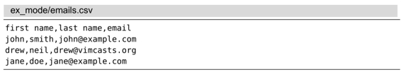

）就可以调用外部程序。例如，如果想查看当前目录的内容，可以运行下面的命令：
）就可以调用外部程序。例如，如果想查看当前目录的内容，可以运行下面的命令：技巧35运行Shell命令
我们不用离开 Vim就能方便地调用外部程序。更棒的是，我们还可以把缓冲区的内容作为标准输入发送给一个外部命令，或是把外部命令的标准输出导入到缓冲区里。
本节讨论的命令在终端 Vim 中工作得最好。如果你在运行 GVim（或 MacVim），那么命令运行得也许没那么顺畅。这没什么好奇怪的，如果 Vim 自身在 shell 里运行，那把工作委派给 shell 也会容易得多。GVim 在某些其他方面做得更好一些，但是终端 Vim在这件事上则更有优势。
执行 Shell 中的程序
在 Vim 的命令行模式中，给命令加一个叹号前缀（参见:h :!）就可以调用外部程序。例如，如果想查看当前目录的内容，可以运行下面的命令：
➾:!ls
《 duplicate.todo loop.js
emails.csv practical-vim.html
foobar.js shopping-list.todo
history-scrollers.vim
Press ENTER or type command to continue
注意区分:!ls和:ls的不同之处。前者调用的是 shell 中的ls命令，而:ls调用的是 Vim的内置命令，用来显示缓冲区列表的内容。
在 Vim 的命令行中，符号%代表当前文件名（参见:h cmdline-special ）。在运行那些操作当前文件的外部命令时，我们可以使用它。例如，如果我们正在编辑某个Ruby文件，那么可以用下面的方式执行此文件：
➾:!ruby %
Vim 也提供了一组文件名修饰符，让我们可以从当前文件名中提取出诸如文件路径或扩展名之类的信息（参见:h filename-modifiers），技巧44中有一个使用这些修饰符的例子。
:!{cmd}这种语法适用于执行一次性命令，但是如果想在 shell 中执行几条命令要怎么做？对这种情况，可以执行 Vim 的:shell命令来启动一个交互的 shell 会话（参见:h :shell）：
➾:shell
➾$ pwd
《 /Users/drew/books/PracticalVim/code/ex_mode
➾$ ls
《 duplicate.todo loop.js
emails.csv practical-vim.html
foobar.js shopping-list.todo
history-scrollers.vim
➾$ exit
用exit命令可以退出此 shell 并返回 Vim。
把Vim置于后台
:shell命令是 Vim 提供的一个功能，它可以让我们切换到一个交互 shell中。但是，如果Vim自身是在终端中运行的话，那么我们也能直接访问终端内置的 shell 命令。例如，bash shell支持作业控制，让我们可以暂停一个作业，把它放到后台，然后在稍后某个时间再把它调回前台继续运行。
假设我们正在 bash shell 中运行 Vim，然后需要执行一些 shell 命令。我们可以先按Ctrl-z挂起Vim 所属的进程，并把控制权交还给bash。此时 Vim 进程在后台处于挂起状态，让我们可以像往常一样与 bash 会话进行交互。运行下面这条命令可以查看当前的作业列表：
➾ $ jobs
《 [1]+ Stopped vim
在 bash 中，我们可以用fg命令唤醒一个被挂起的作业，把它移到前台。这会让 Vim恢复成挂起前的状态。Ctrl-z和fg命令比 Vim 所提供的:shell和exit命令更加方便快捷。要想了解更多信息，请运行man bash，然后阅读作业控制（job control）一节。
把缓冲区内容作为标准输入或输出
在用:!{cmd}时，Vim 会回显{cmd}命令的输出。如果命令的输出很少或没有输出，这工作得很好；但如果命令会产生大量输出，这样回显用处不大。另外一种做法是我们可以用:read !{cmd}命令，把{cmd}命令的输出读入当前缓冲区中（参见:h read!）。
:read !{cmd}命令让我们把命令的标准输出重定向到缓冲区。正如你所期望的一样，:write !{cmd}做相反的事。它把缓冲区内容作为指定{cmd}的标准输入（参见:h :write_c），跳到技巧45可以看到此功能的一个应用实例。
根据叹号在命令行上的位置不同，它的含义也不大相同。比较一下这些命令：
➾:write !sh
➾:write ! sh
➾:write! sh
前两个命令都会把缓冲区的内容传给外部的sh命令作为标准输入，而最后一条命令则调用:write!命令把缓冲区内容写到一个名为sh的文件，这里的叹号会让Vim 覆盖任何已存的sh文件。正如你看到的那样，叹号放得位置不同，命令的作用也大相径庭。因此，在构建这类命令时要多加小心。
:write !sh命令的作用是在shell中执行当前缓冲区中的每行内容，查阅:h rename-files可看到该命令的一个绝佳示例。
使用外部命令过滤缓冲区内容
当给定一个范围时，:!{cmd}命令就具有了不同的含义。由[range]所指定的行会传给{cmd}作为标准输入，然后又会用{cmd}的输出覆盖[range]内原本的内容。换一种说法就是[range]内的文本会被指定的{cmd}进行过滤（参见:h :range!）。Vim 把过滤器定义为“一个由标准输入读取文本，并对其进行某种形式的修改后输出到标准输出的程序”。
作为演示，我们将用外部的sort命令对下列 CSV 文件中的记录进行排序：

我们想基于第二个字段“姓氏”来重排这些记录。我们可以用-t’,’参数告诉sort命令，这些记录以逗号分隔，然后再用-k2参数指定按第二个字段进行排序。
因为文件的第一行是标题信息，我们想把它们保留在文件顶部，因此需要用范围:2,$把它排除在排序范围之外。下列命令将完成我们想要的功能：
➾:2,$!sort -t',' -k2
现在 CSV 文件中的内容就是按姓氏排序的了：
Vim 提供了一种方便的快捷方式来设置:[range]!{filter}命令中的范围。我们可以用!{motion}操作符切换到命令行模式，并把指定{motion}所涵盖的范围预置在命令行上（参见:h !）。举个例子，如果我们把光标移到第2行，然后执行!G，Vim 就会打开命令行并把范围:.,$!预置在命令行上。虽然此后我们仍需输入剩下的{filter}命令，但这毕竟节省了部分工作。
结论
在 Vim中操作时，我们能很方便地调用shell命令。下表选取了最有用的一些调用外部命令的方式：
| 命令 | 用途 |
| :shell | 启动一个shell (输入exit返回Vim) |
| :!{cmd} | 在shell中执行{cmd} |
| :read !{cmd} | 在shell中执行{cmd}，并把其标准输出插入到光标下方 |
| :[range]write !{cmd} | 在shell中执行{cmd}，以[range]作为其标准输入 |
| :[range]!{filter} | 使用外部程序{filter}过滤指定的[range] |
Vim 对某些外部命令会另眼相待。例如，make及grep在 Vim 中都有包装命令，这些命令不仅执行起来更方便，而且Vim还会将它们的输出解析、导入到 quickfix 列表中。我们将在第17章和第18章用很大篇幅介绍这两条命令。
第二部分文件
在本书的这一部分，我们将学习如何使用文件及缓冲区。Vim允许在一个编辑会话中编辑多个文件，我们既可以每次显示一个文件，也可以把工作区分成若干个分割窗口或标签页，每个窗口或标签页包含一个独立的缓冲区。另外，我们还会看到在Vim中打开文件的几种不同方式，并掌握一些方法来解决无法把缓冲区保存到文件的问题。
(1) http://en.wikipedia.org/wiki/Teleprinter
(2) http://www.theregiscer.co.uk/2003/09111/biu-joys.greatert_gifo/